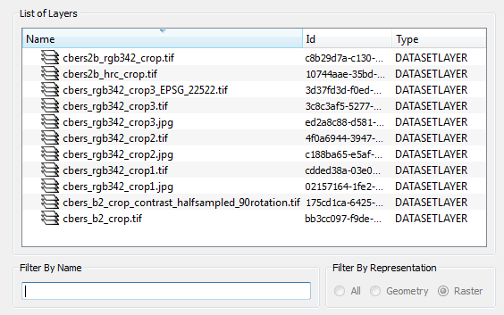
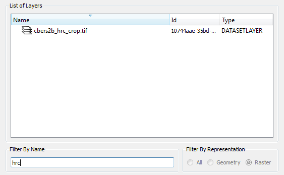

Layer Search
The Layer
Search
interface
is a smart component designed to assist in the selection of layers. It
uses the following types of filter to reduce the list of layers before
the selection:
- Filter By Name: defining part
of the name, the List of Layers will be updated with only the items that meet
this condition.
- Filter By Representation: Each layer has an
associated type of representation being possible also filter by this
feature.
- All: All types of representation.
- Geometry: Only geometry types
(points, lines and polygons).
- Raster: Only raster data and images.
As an example see how to use the filter by name showing only layers with the string "hrc" as part of its name:

